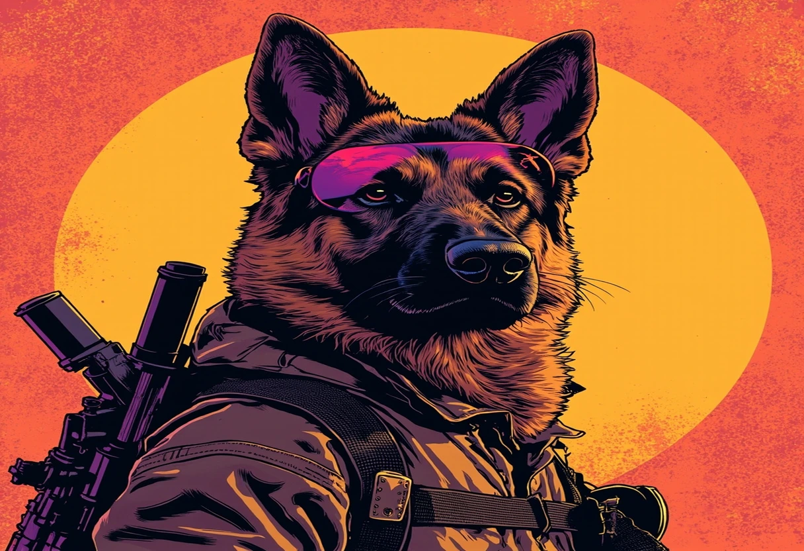
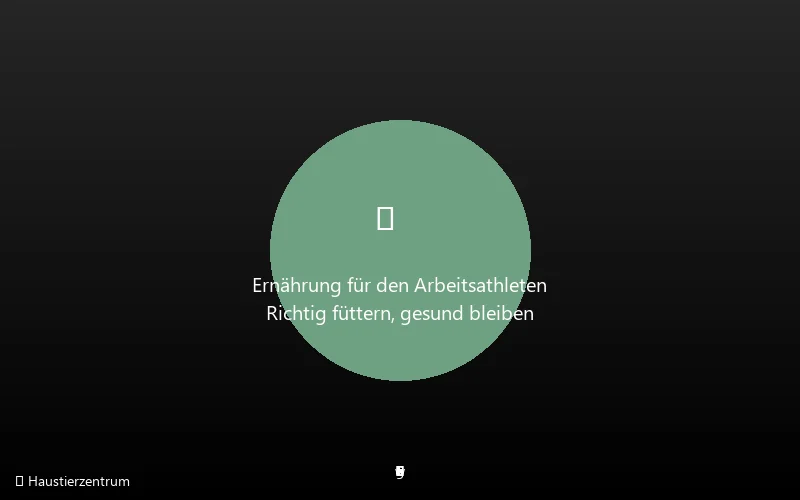

Der Deutsche Schäferhund – kaum eine andere Hunderasse ist so tief in das Bewusstsein der Menschen verwoben. Ob als treuer Familienhund, als unermüdlicher Hütehund auf der Weide, als zuverlässiger Diensthund bei Polizei und Militär oder als sehender Begleiter für blinde Menschen: Der Deutsche Schäferhund ist ein echter Allrounder. Mit seinem markanten, wolfartigen Erscheinungsbild, seiner imposanten Größe und seiner bemerkenswerten Intelligenz zieht er seit über 120 Jahren Menschen in seinen Bann.
In Deutschland, Österreich und der Schweiz zählt der Deutsche Schäferhund seit Jahrzehnten zu den beliebtesten Hunderassen – und weltweit ist er in über 80 Ländern verbreitet. Allein beim Verein für Deutsche Schäferhunde (SV) werden jährlich über 10.000 Welpen eingetragen. Doch Popularität hat ihren Preis: Die enorme Nachfrage hat auch zu Massenzucht, Health-Problemen und einem Imageproblem geführt, das diese faszinierende Rasse nicht verdient hat.
In diesem umfassenden Rasseguide erfährst Du alles, was Du über den Deutschen Schäferhund wissen musst: von seiner faszinierenden Geschichte über Charakter und Wesen, Haltung und Pflege, Ernährung und Gesundheit bis hin zu einer ehrlichen Einschätzung, für wen diese Rasse geeignet ist – und für wen eher nicht. Denn der Deutsche Schäferhund ist ein Hund für Menschen, die bereit sind, Verantwortung zu übernehmen – und die mit dem Herzen ebenso denken wie mit dem Verstand.
📢 Google AdSense
Anzeige
Herkunft & Geschichte des Deutschen Schäferhunds
Die Geschichte des Deutschen Schäferhunds ist untrennbar mit einem Mann verbunden: Max von Stephanitz (1864–1936), einem ehemaligen preußischen Kavallerieoffizier und promovierten Tierarzt. Von Stephanitz war fasziniert von den Hütehunden, die in Deutschland auf den weitläufigen Weiden im Einsatz waren. Doch diese Hunde waren keine einheitliche Rasse, sondern ein bunt gemischter Haufen verschiedener regionaler Schläge, die sich in Größe, Farbe, Fellstruktur und Wesen teilweise erheblich unterschieden.
Der visionäre Gründer und sein Traum
Am 3. April 1899 besuchte von Stephanitz eine Hundeausstellung in Karlsruhe. Dort sah er einen Hund namens Hektor Linksrhein, einen wolfgrauen Hütehund aus dem Wupper-Tal, der ihn sofort mit seinem athletischen Körperbau, seiner beeindruckenden Intelligenz und seiner unermüdlichen Arbeitswilligkeit fesselte. Von Stephanitz kaufte den Hund auf der Stelle, nannte ihn in Horand von Grafrath um und gründete noch am selben Tag den Verein für Deutsche Schäferhunde (SV). Horand wurde als erster Deutscher Schäferhund in das neu geschaffene Zuchtbuch unter der Nummer SZ 1 eingetragen.
Das Zuchtziel von Stephanitz' war klar und kompromisslos: Er wollte einen arbeitsfreudigen, intelligenten und körperlich gesunden Gebrauchshund schaffen – keinen Ausstellungshund, der lediglich schönen Standards entsprechen sollte. Für von Stephanitz stand der Nutzen immer vor der Schönheit: „Der Gebrauchswert ist das Maß aller Dinge" war sein unverrückbares Leitmotiv. In seinem 1901 erschienenen Standardwerk „Der Deutsche Schäferhund in Wort und Bild" legte er die Grundlagen für die Zucht und definierte den Rassestandard, der – mit Modifikationen – bis heute gilt.
Vom Hütehund zum Welthund
In den ersten Jahrzehnten nach der Gründung des SV dominierte der Hüteeinsatz. Deutsche Schäferhunde hüteten Schafe und Rinder auf den Weiden Deutschlands und bewiesen dabei ihre enorme Vielseitigkeit, ihre Ausdauer und ihre Fähigkeit, selbstständig Entscheidungen zu treffen. Doch mit der Industrialisierung und Urbanisierung Deutschlands um die Jahrhundertwende schrumpften die Weideflächen – und der Deutsche Schäferhund drohte, seinen ursprünglichen Arbeitsplatz zu verlieren.
Von Stephanitz erkannte das Problem früh und leistete Pionierarbeit: Er überzeugte Polizei und Militär von den Fähigkeiten der Rasse. Schon 1901 setzte die deutsche Polizei erste Deutsche Schäferhunde als Diensthunde ein. Im Ersten Weltkrieg waren Tausende von Schäferhunden als Sanitätshunde, Meldehunde, Minensuchhunde und Patrouillenhunde im Einsatz – und auch auf der gegnerischen Seite wurde die Rasse eingesetzt. Der legendäre Schäferhund-Rüde Rin Tin Tin, der nach dem Ersten Weltkrieg aus dem kriegszerstörten Frankreich nach Amerika gebracht wurde, wurde in den 1920er Jahren zum ersten großen Hundefilmstar und machte die Rasse in den USA populär. Insgesamt drehte Rin Tin Tin 27 Filme und erhielt sogar eine Oscar-Nominierung.
In der Weimarer Republik und im Dritten Reich boomte die Schäferhund-Zucht weiter. Leider wurde die Rasse in dieser Zeit auch für dunkle Zwecke missbraucht – als Wachhunde in Konzentrationslagern und als Instrument der Propaganda. Diese unselige Verbindung belastet das Image des Deutschen Schäferhunds bis heute bei manchen Menschen, obwohl die Rasse selbstverständlich nicht für die Verbrechen ihrer Halter verantwortlich gemacht werden kann. Nach dem Zweiten Weltkrieg wurde die Rasse in den USA und Großbritannien vorübergehend als „Alsatian" bezeichnet, um die Assoziation mit Deutschland zu vermeiden – ein Name, der in Großbritannien bis 1977 offiziell verwendet wurde.
Nachkriegszeit und moderne Entwicklung
Nach dem Zweiten Weltkrieg war die Zucht durch Kriegsverluste und Nahrungsmangel stark dezimiert. Doch der SV – 1945 vorübergehend von den Alliierten aufgelöst und 1946 neu gegründet – baute die Zucht systematisch wieder auf. In den 1950er und 1960er Jahren erlebte der Deutsche Schäferhund einen beispiellosen Aufschwung: Er wurde zur beliebtesten Hunderasse in Deutschland und breitete sich weltweit aus.
In der DDR entwickelte sich parallel eine eigene Zuchtlinie – die sogenannten DDR-Schäferhunde, die auf Arbeitsleistung und nicht auf Schönheit gezüchtet wurden. Diese Hunde waren schlanker, trockener, dunkler in der Farbe und extrem leistungsstark. Nach der Wiedervereinigung 1990 gingen viele DDR-Blutlinien in die gesamtdeutsche Zucht ein, wobei ihr Anteil seither stetig gesunken ist.
Arbeitslinien vs. Showlinien – die große Spaltung
Mit der wachsenden Popularität trat jedoch das bis heute emotionalste Problem der Rasse zutage: die Aufspaltung in Arbeits- und Showlinien. Während die einen Züchter am ursprünglichen Ideal von Stephanitz' festhielten und auf Arbeitsfreude und Gesundheit züchteten, legten andere den Schwerpunkt auf das Äußere – insbesondere auf den fließenden Gang mit immer stärker abfallender Rückenlinie. Diese Entwicklung führte zu einer Rasse, die heute in zwei sehr unterschiedliche Typen aufgespalten ist:
- Arbeitslinien (DDR-/Lesek-Linien): Schlanker, trockener Körperbau, gerader oder leicht abfallender Rücken, weniger ausgeprägtes Fell, extrem hoher Arbeitsantrieb, dunklere Farben (Sables, B&T). Diese Linien sind vor allem bei Polizei, Militär und im Hundesport verbreitet.
- Show-/Hochzuchtlinien: Massiverer Knochenbau, stärker abfallender Rücken („Rollkruppe"), ausgeprägterer Winkelung der Hinterhand, üppigeres Fell, auffälligere Farben (Schwarztan, B&T mit sattem Rot), gemäßigterer Arbeitsantrieb. Diese Linien dominieren auf Ausstellungen und bei Familienhunden.
Die Debatte zwischen Verfechtern beider Linien ist eines der emotionalsten Themen in der Hundeszene. Kritiker der Hochzuchtlinien werfen den Züchtern vor, durch die übertriebene Betonung des Gangwerks gesundheitliche Probleme wie Hüftdysplasie und Rückenbeschwerden zu fördern. Befürworter halten entgegen, dass auch in den Showlinien verantwortungsvoll gezüchtet wird und die HD-Werte sich über die Jahrzehnte verbessert haben. Die Wahrheit liegt – wie so oft – in der Mitte: Es gibt hervorragende Hunde in beiden Lagern, aber auch solche, die den Idealen ihrer jeweiligen Zuchtrichtung nicht gerecht werden.
Heute zählt der Deutsche Schäferhund zu den häufigsten Hunderassen weltweit. International ist die Rasse nach dem FCI-Standard Nr. 166 anerkannt und wird in über 80 Ländern aktiv gezüchtet. Der SV mit Sitz in Augsburg ist mit über 100.000 Mitgliedern einer der größten Rassehunde-Vereine der Welt.
Rassestandard & Erscheinungsbild

Der Deutsche Schäferhund ist ein großer, mittelkräftiger, gut bemuskelter Hund im Rechteckformat (Körperlänge über Widerristhöhe). Das Erscheinungsbild ist trocken, fest und gestreckt – der Gesamteindruck muss den eines kräftigen, muskulösen und ausdauernden Arbeitshundes vermitteln.
Größe und Gewicht
Laut FCI-Standard betragen die Maße:
- Rüden: Widerristhöhe 60–65 cm, Gewicht 30–40 kg
- Hündinnen: Widerristhöhe 55–60 cm, Gewicht 22–32 kg
Hunde, die mehr als 1 cm über oder unter dem Standardmaß liegen, gelten als zuchtausschließende Fehler. In der Praxis gibt es jedoch insbesondere in den Showlinien häufig oversized Rüden mit 70 cm und mehr – ein Trend, der von Kritikern als Gesundheitsrisiko bewertet wird.
Fell & Farben
Der Deutsche Schäferhund tritt in drei Fellvarietäten auf:
- Stockhaar (Normfell): Das dichteste und gebräuchlichste Haarkleid. Unterwolle dicht, Deckhaar glatt anliegend, dicht, hart und nicht zu kurz. An Kopf, Ohren und Vorderläufen kurz, am Hals länger und dichter („Mähne"), an Rückseite der Vorderläufe und Hosen länger.
- Stockhaar mit Unterwolle: Wie Stockhaar, aber mit deutlich längerer Unterwolle und längerem Deckhaar. Die Verlängerung ist besonders an Rücken und Flanken sichtbar.
- Langstockhaar: Deutlich länger als Stockhaar, weich, oft mit Scheitel auf Rücken und Fahnen an Ohren, Brust, Rückseite der Läufe und Schwanz. Lange Underwolle. Diese Varietät wird vom SV nicht für die Zucht zugelassen (lange Zeit galt sie als zuchtausschließender Fehler), erfreut sich jedoch bei Haltern großer Beliebtheit.
Farben: Der Standard erkennt folgende Farben an: Schwarzrotbraun („schwarz mit braunen Abzeichen", B&T), Schwarz, Schwarzgrau, Schwarzrotgrau, Grau mit dunklen Abzeichen, Sables (grau mit braunen oder gelben Abzeichen), Hellere Farben sind zulässig, sofern das Pigment ausgeprägt ist. Nicht zulässig sind: Weiß, Blau, Leberfarben sowie Hunde mit überwiegend weißer Zeichnung. Die Nase muss stets schwarz sein.
Körperbau im Detail
Der Kopf ist keilförmig, trocken, proportional zur Körpergröße. Die Ohren sind mittelgroß, breit am Ansatz, spitz zulaufend und stehend (Kippohren im Ruhezustand sind fehlerhaft bei erwachsenen Hunden). Die Augen sindmandelförmig, mittelgroß und so dunkel wie möglich – helle Augen („Geieraugen") sind unerwünscht. Der Rücken sollte gerade und kräftig sein, die Kruppe lang und mäßig abfallend (die starke Abfallung in Showlinien ist umstritten). Die Rute ist buschig, mindestens bis zum Sprunggelenk reichend und wird in Ruhestellung säbel- oder hakenförmig hängend getragen, in Erregung leicht angehoben – jedoch nie über die Rückenlinie („Überwerfen der Rute").
Der Gang ist ausgreifend, fließend und raumgewinnend – ein fließender, bodennaher Trab, der den Eindruck müheloser Vorwärtsbewegung vermittelt. Der Schäferhund ist ein Passgänger: Die Bewegung soll ökonomisch sein, jede überflüssige Hebung des Körpers kostet Energie.
Charakter & Wesen: Der Kern der Rasse
Der Charakter des Deutschen Schäferhunds ist so vielschichtig wie seine Einsatzgebiete. Im Kern ist er ein arbeitsfreudiger, loyaler und selbstbewusster Hund, der enge Bindungen zu seiner Familie aufbaut und bereit ist, diese mit allem, was er hat, zu beschützen.
Die wichtigsten Wesenszüge
- Ausgeprägte Loyalität & Bindungsbereitschaft: Ein Deutscher Schäferhund ist ein Hund, der sich intensiv an seinen Halter und seine Familie bindet. Diese tiefe Bindung ist die Grundlage für seine enorme Einsatzbereitschaft. Er will gefordert und gefördert werden, er will mit seinem Menschen zusammenarbeiten. Diese Eigenschaft macht ihn zum idealen Partner für Hundesport und Dienstwesen – aber sie bedeutet auch, dass ein Schäferhund, der seinen Halter verliert, tief leiden kann.
- Hohe Arbeitsfreude & Lernbereitschaft: Es gibt kaum etwas, das ein Deutscher Schäferhund lieber tut, als zu arbeiten. Ob Fährtenarbeit, Objektsuche, Agility, Obedience, IGP-Sport oder einfach das Apportieren eines Dummys – die Möglichkeit, mit seinem Halter zusammen eine Aufgabe zu lösen, ist für ihn der größte Lohn. Diese Arbeitsfreude ist keine Qual, sondern sein tiefstes Bedürfnis – ein Schäferhund, der nicht arbeiten darf, ist ein frustrierter Hund.
- Intelligenz & Problemlösungsfähigkeit: Der Deutsche Schäferhund gehört zu den intelligentesten Hunderassen überhaupt. In der bekannten Rangliste von Stanley Coren („The Intelligence of Dogs") belegt er Platz 3 – nach Border Collie und Pudel. Diese Intelligenz äußert sich nicht nur in der Fähigkeit, Kommandos schnell zu lernen (Gehorsamsintelligenz), sondern auch in der Fähigkeit, selbstständig Probleme zu lösen (instinktive Intelligenz). Ein Schäferhund, der eine Aufgabe gestellt bekommt, wird sie lösen – auf seine eigene Art, wenn nötig.
- Schutz- & Wachtrieb: Der Deutsche Schäferhund hat von Natur aus einen ausgeprägten Schutz- und Wachtrieb. Er beobachtet sein Revier aufmerksam, meldet fremde Personen durch Bellen und ist im Ernstfall bereit, seine Familie zu verteidigen. Dieser Trieb muss durch kontrollierte Erziehung und Sozialisierung in die richtigen Bahnen gelenkt werden – ein unerzogener Schäferhund kann durch übertriebenes Schutzverhalten gefährlich werden.
- Selbstbewusstsein & Nervenstärke: Ein gut gezüchteter und sozialisierter Deutscher Schäferhund ist selbstbewusst und nervenstark – er reagiert auf unerwartete Reize nicht panisch, sondern gelassen. Diese Eigenschaft („hart im Take") ist essenziell für Diensthunde, aber auch für Familienhunde, die mit Alltagsreizen wie Lärm, Verkehr und fremden Menschen zurechtkommen müssen.
- Reserviertheit gegenüber Fremden: Deutsche Schäferhunde sind Fremden gegenüber von Natur aus zurückhaltend – nicht aggressiv, aber auch nicht sofort auf den Arm nehmbar. Sie beobachten erst, nehmen situationell wahr und entscheiden dann. Diese Reserve ist Teil ihrer wachsamen Natur und macht sie zu hervorragenden Wachhunden. Mit Vertrauten jedoch sind sie liebevoll, verspielt und anhänglich.
- Familienfreundlichkeit: Gegenüber seiner eigenen Familie und insbesondere Kindern ist der Deutsche Schäferhund geduldig, liebevoll und tolerant. Er hat ein feines Gespür für Stimmungen und ahmt die Dynamik im Familienverband genau nach. Viele Schäferhunde sind geradezu „Kinderhüter" – sie passen auf die Jüngsten auf und tolerieren viel.
- Verspieltheit: Unterschätze nie die Spielfreude eines Deutschen Schäferhunds! Zwar ist er ernst, wenn es um Arbeit geht, aber im Umgang mit seiner Familie zeigt er eine entzückende, clownhafte Seite. Apportieren, Zerrspiele, Versteckspiele – ein Schäferhund liebt es, mit seinen Menschen zu toben.
Was den Schäferhund von anderen Rassen unterscheidet
Anders als viele andere populäre Rassen ist der Deutsche Schäferhund kein Spezialist, sondern ein Generalist. Ein Golden Retriever ist spezialisiert auf das Apportieren aus dem Wasser, ein Border Collie auf das Hüten von Schafen, ein Beagle auf das Jagen mit der Nase – der Deutsche Schäferhund kann all das und noch viel mehr. Diese Vielseitigkeit ist sein größtes Kapital, aber auch seine größte Herausforderung: Wer die vielen Fähigkeiten dieser Rasse nicht nutzt und den Hund nicht ausreichend auslastet, riskiert Verhaltensprobleme.
Ein weiterer Unterschied zu vielen Begleithunden: Der Deutsche Schäferhund hat eigenständiges Denken. Er ist kein Hund, der blind gehorcht – er will die Aufgabe verstehen, er will Sinn in seinem Tun sehen. Das macht die Erziehung anspruchsvoller, aber auch lohnender, denn ein Schäferhund, der begriffen hat, warum er etwas tun soll, wird es mit beispielloser Zuverlässigkeit ausführen.
Im Vergleich zum Belgischen Malinois, der oft als „natürlicheres" Arbeitstier betrachtet wird, ist der Deutsche Schäferhund etwas gemäßigter in seinem Triebniveau – er hat eine „Pause-Taste", die der Malinois oft vermissen lässt. Das macht den Schäferhund für viele Halter besser handhabbar, ohne dabei an Arbeitsfreude einzubüßen.
Haltung & Pflege: Ansprüche an den Halter
Der Deutsche Schäferhund ist kein Anfängerhund – diese Festellung steht am Anfang jeder seriösen Rasseberatung. Wer sich für diese Rasse entscheidet, sollte Erfahrung im Umgang mit Hunden haben, oder zumindest bereit sein, sich intensiv in Erziehung und Haltung einzuarbeiten und professionelle Hilfe (Welpenprägkurs, Hundeschule, Hunde-Trainer) in Anspruch zu nehmen.
Bewegung & Auslastung
Mindestens zwei Stunden tägliche Bewegung sind das absolute Minimum für einen Deutschen Schäferhund – und damit ist nicht ein gemütlicher Spaziergang gemeint, bei dem der Hund an der Leine nebenherläuft. Der Schäferhund braucht zielgerichtete Bewegung: Laufen, Rennen, Schwimmen, Apportieren, Suchspiele. Idealerweise teilt sich die Auslastung in:
- Körperliche Auslastung: Mindestens 60–90 Minuten aktives Bewegen – Laufen am Fahrrad (erst ab 12–15 Monaten, wenn das Skelett voll ausgereift ist!), Schwimmen, Rennen auf dem Hundeplatz, Wandern, ausgedehnte Apportierspiele im Wald oder auf dem Feld.
- Geistige Auslastung: Mindestens 30–60 Minuten – Fährtenarbeit, Mantrailing, Suchspiele mit verstecktem Futter („Schnüffelspiele"), Intelligenzspielzeug, Erlernen neuer Kommandos und Tricks, Namenslernen von Objekten.
- Strukturierte Beschäftigung: Hundesport wie Agility, Obedience, Rally-O, IGP (früher Schutzhund/VPG-Sport), THS (TrailhundSport), Flyball oder DogDance. Ein bis zweimal pro Woche Training in der Hundeschule ist ideal.
Warnung: Ein unterausgelasteter Deutscher Schäferhund entwickelt fast unvermeidlich Verhaltensprobleme – von Leinenaggression über Zerstörungswut in der Wohnung, übermäßiges Bellen, Graben, Entlaufen bis hin zu ausgeprägtem Territorialverhalten und Aggression. Die Arbeitsfreude dieser Rasse ist ein Geschenk, wenn sie kanalisiert wird – und ein Fluch, wenn sie ins Leere läuft.
Erziehung & Training
Die Erziehung eines Deutschen Schäferhunds erfordert Konsequenz, Klarheit und Einfühlungsvermögen. Die Rasse spricht hervorragend auf positives Verstärkungstraining an – Belohnung durch Futter, Spiel und soziale Bestätigung. Dominanz-basierte Methoden, Härte oder physische Bestrafung sind mit dieser intelligenten und sensiblen Rasse nicht nur kontraproduktiv, sondern geradezu gefährlich: Ein Schäferhund, der seinen Halter als Bedrohung wahrnimmt, wird sich irgendwann verteidigen.
Die wichtigsten Grundlagen der Erziehung:
- Frühzeitige Sozialisierung: In der Prägephase (8–16 Wochen) muss der Welpe möglichst viele Menschen, Hunde, Tiere, Umgebungen, Geräusche und Situationen kennenzulernen. Jede positive Erfahrung, die er in dieser Zeit macht, prägt sein späteres Verhalten. Jede negative Erfahrung kann ein Leben lang nachwirken. Der Welpenprägkurs ab der 8. Woche ist unverzichtbar.
- Klares Regelwerk: Der Schäferhund braucht klare, konsistente Regeln – was heute verboten ist, muss auch morgen verboten sein. Inkonsequenz verwirrt diese intelligente Rasse und untergräbt den Respekt gegenüber dem Halter.
- Anti-Jagdtraining: Viele Schäferhunde haben einen ausgeprägten Beutetrieb, der durch den Hüte- und Treibinstinkt genährt wird. Ein systematisches Anti-Jagdtraining und ein solider Rückruf („Hier" oder „Come") sind überlebenswichtig – buchstäblich. Ohne zuverlässigen Rückruf darf der Schäferhund nicht frei laufen.
- Leinenführigkeit: Ein 35-Kilo-Hund, der an der Leine zieht, ist nicht nur unangenehm, sondern gefährlich – besonders für ältere Menschen oder Kinder, die die Leine halten. Die Erziehung zur lockeren Leine hat oberste Priorität und sollte vom ersten Tag an konsequent trainiert werden.
- Schutztriebkontrolle: Der natürliche Schutztrieb muss durch gezieltes Training kontrolliert werden. Ein Schäferhund, der unterscheidet, wann Wachsamkeit gefragt ist und wann nicht, ist ein sicherer, entspannter Familienhund. IGP-Sport (unter fachkundiger Anleitung) kann hier einen wertvollen Beitrag leisten.
- Training mit positiver Verstärkung: Clickertraining, Marker-Training und belohnungsbasierte Methoden funktionieren beim Schäferhund hervorragend. Die Intelligenz der Rasse bedeutet, dass sie schnell versteht, was gefordert ist – die Motivation, es auch zu tun, kommt aus der Zusammenarbeit mit dem Halter.
Wohnung & Umgebung
Grundsätzlich kann ein Deutscher Schäferhund in einer Wohnung leben – wenn die Auslastung stimmt. Ideal ist jedoch ein Haus mit eingezäuntem Garten, in dem der Hund sich frei bewegen kann. Wichtig: Der Garten allein ersetzt keine Spaziergänge und keine geistige Auslastung! Ein Schäferhund, der den ganzen Tag im Garten herumliegt und abends nur kurz Gassi geht, ist kein ausgelasteter Hund.
Bei der Wohnungshaltung ist Folgendes zu beachten:
- Die Wohnung sollte großzügig sein – ein Schäferhund braucht Platz zum Liegen, Strecken und Bewegen
- Tägliche ausgedehnte Spaziergänge (morgens und abends mindestens 45–60 Minuten) sind Pflicht
- Regelmäßige Hundesport-Einheiten kompensieren die fehlende Auslaufmöglichkeit
- Nachbarschaftsrecht beachten: Ein großer Hund kann Lärmprobleme verursachen (Bellen, Treppengang)
- Bei Mietverhältnissen: Erlaubnis des Vermieters einholen, viele Vermieter haben Restriktionen für große Hunde
- Katzen und Kleintiere im selben Haushalt erfordern sorgfältige Eingewöhnung und Management
Fellpflege
Der Deutsche Schäferhund hat ein doppeltes Haarkleid (Stockhaar) mit dichter Unterwolle und gröberem, wasserabweisendem Deckhaar. Die Fellpflege ist vergleichsweise einfach, aber nicht vernachlässigbar:
- Normalfell: 1–2-mal pro Woche gründlich bürsten, um lose Haare zu entfernen und Verfilzungen vorzubeugen. Ein Unterwollkamm und eine Kunststoffbürste sind ideal. Beginne an Kopf und Nacken, arbeite dich über Rücken und Flanken zu den Hosen (Oberschenkelrückseite) vor – dort verfilzt das Fell am leichtesten.
- Fellwechsel (2× jährlich): Im Frühjahr und Herbst verliert der Schäferhund massiv Unterwolle – der sogenannte „Haarschock". In dieser Phase sollte täglich gebürstet werden, idealerweise mit einem Undercoat-Rake oder einer Furminator-Bürste. In dieser Zeit kannst Du buchstäblich einen zweiten Hund aus dem Fell bürsten.
- Langstockhaar-Varietät: Die langhaarige Variante braucht deutlich mehr Pflege – 2–3-mal pro Woche bürsten, besonders an „Fahnen" an den Ohren, der Hosenpartie (behande Behaarung an Oberschenkeln), der Brust und dem Schwanz. Verfilzungen sind hier viel häufiger und müssen sorgfältig herausgearbeitet werden.
- Baden: Nur bei starker Verschmutzung – zu häufiges Baden entfettet das Fell und zerstört die wasserabweisende Funktion des Deckhaars. Ein- bis zweimal im Jahr reicht. Verwende ein mildes Hunde-Shampoo (pH-neutral).
Weitere Pflegemaßnahmen
- Krallen: Regelmäßig kontrollieren und bei Bedahrung kürzen. Hunde, die viel auf weichem Boden (Wiese, Wald) laufen, tragen die Krallen weniger ab als Asphalt-Läufer. Zu lange Krallen verändern das Gangbild und können zu Gelenkproblemen führen.
- Ohren: Die stehenden Ohren des Schäferhunds sind pflegeleicht und gut belüftet – ein Vorteil gegenüber Schlappohren. Regelmäßig auf Rötung, Geruch, Schmutz oder übermäßigen Ohrenschmalz kontrollieren – bei Bedarf mit einem weichen, trockenen Tuch oder einem speziellen Ohrreiniger säubern. Niemals Wattestäbchen verwenden!
- Zähne: Regelmäßige Zahnpflege mit Hunde-Zahnbürste und -Zahnpasta (niemals人类liche Zahnpasta – Fluorid ist für Hunde toxisch!). Alternativ: Kauartikel wie Bullysticks, Rinderhautknochen, spezielle Zahnpflege-Kausnacks. Zahnstein professionell beim Tierarzt unter leichter Narkose entfernen lassen.
- Pfotenballen: Im Winter auf Risse durch Streusalz und Eis kontrollieren, ggf. Pfotensalbe oder Hunde-Pfotenbalsam auftragen. Im Sommer: Heißer Asphalt kann die Ballen verbrennen – die „Sieben-Sekunden-Regel" anwenden: Wenn Du die Handfläche 7 Sekunden auf den Asphalt legen kannst, ist es auch für den Hund okay.
- Zecken- & Flohschutz: Ganzjährig, insbesondere inenzeckenreichen Gebieten. Consulte den Tierarzt zur Wahl des passenden Präparats (Spot-On, Tablette, Halsband).
Ernährung: Kraftstoff für einen Arbeitsathleten

Der Deutsche Schäferhund ist ein athletischer, muskulöser Hund mit hohem Energieumsatz. Seine Ernährung muss diesen Anforderungen gerecht werden – Qualität vor Quantität lautet die Devise. Ein Schäferhund, der mit billigem Discounter-Futter ernährt wird, wird irgendwann den Preis in Form von Gesundheitsproblemen zahlen.
Grundlagen der Fütterung
Ein erwachsener Deutscher Schäferhund (25–40 kg) benötigt etwa 1.200–1.800 kcal pro Tag, abhängig von Alter, Geschlecht, Aktivitätsniveau und Gesundheitszustand. Hochaktive Sport- und Diensthunde können 2.000–2.500 kcal benötigen, Senior-Hunde oder inaktive Tiere kommen mit 1.000–1.200 kcal aus.
Die Makronährstoffe sollten sich etwa wie folgt zusammensetzen:
- Protein: 22–26 % (aus hochwertigen tierischen Quellen wie Rind, Huhn, Lamm, Fisch – nicht aus pflanzlichen Proteinen wie Soja oder Weizengluten)
- Fett: 12–16 % (liefert konzentrierte Energie und essentielle Fettsäuren für Haut, Fell und Zellfunktionen)
- Kohlenhydrate: 30–50 % (aus leicht verdaulichen Quellen wie Reis, Süßkartoffel, Hafer, Hirse – Weizen, Mais und Soja sollten vermieden werden, da sie häufig Allergien auslösen)
- Ballaststoffe: 3–5 % (für eine gesunde Verdauung und regelmäßigen Stuhlgang)
- Feuchtigkeit: Trockenfutter enthält nur 8–12 % – daher ist der Zugang zu frischem Wasser umso wichtiger. Nassfutter hat 70–80 % Feuchtigkeit und trägt zur Hydration bei.
Fütterungsarten im Vergleich
Trockenfutter (Premium/Superpremium): Die bequemste und günstigste Lösung auf Dauer. Achte auf einen hohen Fleischanteil (mindestens 50 % tierische Zutaten, besser 70 %), wenig Getreide, keine künstlichen Zusatzstoffe (Farb-, Aroma-, Konservierungsstoffe), keine Tierversuche des Herstellers. Marken wie Orijen, Acana, MAC's, Lukullus, Wolfsblut, Terra Canis oder MjAMmJAM haben sich bei Schäferhund-Haltern bewährt.
Nassfutter: Höherer Feuchtigkeitsgehalt (70–80 %), näher an der natürlichen Beutetier-Zusammensetzung, in der Regel höherer Fleischanteil. Ideal in Kombination mit Trockenfutter oder als alleinige Nahrung. Achte auf die Deklaration: „Alleinfuttermittel" bedeutet, dass alle Nährstoffe enthalten sind; „Ergänzungsfuttermittel" muss mit anderen Komponenten ergänzt werden.
BARF (Biologisch Artgerechtes Rohes Futter): Rohes Fleisch, fleischige Knochen, Innereien, Gemüse, Obst und Ergänzungsstoffe. Die natürlichste Fütterungsart, erfordert aber fundierte Kenntnisse der Nährstoffzusammensetzung – insbesondere die Calcium-Phosphor-Balance (ideales Verhältnis 1,2–1,5:1), die Versorgung mit Vitamin D, Vitamin E, Jod und Taurin sind kritisch. Bei Schäferhunden in der Wachstumsphase ist eine exakte Mineralstoffbalance besonders wichtig, um skeletal Entwicklungsstörungen vorzubeugen. Füttere niemals Röhrenknochen (z.B. Hühnerknochen) – splittergefahr!
Besondere Aspekte bei Schäferhunden
- Wachstumsphase: Schäferhund-Welpen wachsen extrem schnell – sie verdoppeln ihr Geburtsgewicht innerhalb von 7–10 Tagen und erreichen 50 % ihres Endgewichts mit nur 4 Monaten. Um Gelenkproblemen (HD, ED, OCD) vorzubeugen, sollte die Energie- und Calciumzufuhr moderat sein – kein excessives Füttern! Ein leicht schmächtiger Welpe ist einem zu dicken immer vorzuziehen. Spezielle Welpenfutter für große Rassen berücksichtigen dies mit reduziertem Energie- und Calciumgehalt. Füttere 3–4 Mahlzeiten pro Tag bei Welpen unter 6 Monaten, 2–3 Mahlzeiten bei Junghunden.
- Magenempfindlichkeit: Deutsche Schäferhunde neigen zu Magen-Darm-Problemen, insbesondere zur gefürchteten Magendrehung (s.u.). Mehrere kleine Mahlzeiten (2–3 pro Tag) statt einer großen Portion, ruhige Fütterung (kein Herumtollen direkt vor und nach dem Fressen), erhöhter Fressnapf (reduziert Luftschlucken) und hochverdauliches Futter sind wichtig. Bei chronischen Durchfällen oder Erbrechen sollte eine Ausschlussdiät durchgeführt werden, um Futtermittelallergien zu identifizieren.
- Gelenkgesundheit: Supplemente wie Glucosamin, Chondroitin, Grünlippenmuschel-Extrakt (GLM) und Hyaluronsäure können die Gelenkgesundheit unterstützen – besonders bei Hunden mit HD, ED oder Arthrose. Omega-3-Fettsäuren (aus Fischöl oder Algenöl) wirken entzündungshemmend und können Schmerzen lindern.
- Haut & Fell: Ein glänzendes, dichtes Fell ist ein Indikator für gute Ernährung und Gesundheit. Biotin (Vitamin H), Zink und Omega-3/-6-Fettsäuren sind essenziell für Haut- und Fellgesundheit. Schäferhunde mit stumpfem, struppigem Fell oder Haarausfall sollten tierärztlich untersucht werden – die Ursache kann von Mangelernährung über Allergien bis hin zu Schilddrüsenunterfunktion reichen.
- Leckerlis: In Maßen und als Belohnung im Training. Achte auf kalorienarme Alternativen: Karottenstücke, Apfelscheiben (ohne Kerngehäuse!), Gurke, getrocknete Lungenstücke, Kauwürstchen. Vermeide Zucker, Salz, künstliche Aromen und – absolut wichtig – Schokolade, Trauben/Rosinen, Zwiebeln, Knoblauch, Xylit und Macadamia-Nüsse, die für Hunde giftig sind.
📢 Google AdSense
Anzeige
Gesundheit & typische Erkrankungen
Der Deutsche Schäferhund hat ein durchwachsenes Gesundheitsprofil. Einerseits ist er grundsätzlich ein robuster, widerstandsfähiger Hund mit einer durchschnittlichen Lebenserwartung von 9–13 Jahren. Andererseits bringt die enorme Popularität und die Aufspaltung in Arbeits- und Showlinien einige ernsthafte rassetypische Gesundheitsprobleme mit sich, die potenzielle Halter unbedingt kennen sollten.
Orthopädische Erkrankungen
Hüftdysplasie (HD): Die häufigste und bekannteste Erkrankung der Rasse. Bei der HD kommt es zu einer Fehlentwicklung des Hüftgelenks: die Gelenkpfanne (Acetabulum) ist zu flach und/oder der Gelenkkopf (Caput femoris) zu klein, sodass das Gelenk nicht stabil schließt. Folge: Instabilität, sekundäre Arthrose, Schmerzen und zunehmende Bewegungseinschränkung. Die Prävalenz liegt bei Deutschen Schäferhunden bei etwa 20–25 % – je nach Linie und Zuchtstandard. Seriöse Züchter lassen ihre Zuchttiere röntgen und werten die Bilder über den SV oder die FCI aus. Die HD-Werte werden in Grade eingeteilt: A = frei, B = Übergangsform (fast normal), C = leicht dysplastisch, D = mittel dysplastisch, E = schwer dysplastisch. Der Kauf eines Welpen ausschließlich von HD-A-Elterntieren (beide Eltern HD-A) minimiert das Risiko erheblich, schließt es aber nicht aus – Umwelteinflüsse (Fütterung, Belastung im Wachstum) spielen eine Rolle.
Ellbogendysplasie (ED): Auch die Ellbogengelenke können fehlerhaft entwickelt sein. Die drei Formen der ED – Fragmentierter Processus anconeus (FPA), Fragmentierter medialer Coronoidprozess (FCP) und Isolierte medialer Condylusläsion (IMC) – treten bei Schäferhunden ähnlich häufig auf wie HD. Auch hier ist die Röntgenkontrolle der Zuchttiere obligatorisch. Symptome: Lahmheit der Vordergliedmaße,尤其是 nach Ruhepausen, verminderte Belastungsbereitschaft, Bänderstraffe.
Osteochondrosis dissecans (OCD): Eine Entwicklungsstörung des Knorpels, die meist im Wachstum (4–10 Monate) auftritt und vor allem das Schultergelenk betrifft (OCD Schulter). Ursache ist oft eine zu energie- und calciumreiche Fütterung während der Wachstumsphase combined mit zu viel Belastung. Symptome: Lahmheit der Vordergliedmaße, Schonhaltung. Behandlung: Konservativ (Ruhe, Medikamentation) oder operativ (Gelenkspiegelung/Arthroskopie).
Neurologische & degenerative Erkrankungen
Degenerative Myelopathie (DM): Eine progressive neurologische Erkrankung, die bei älteren Schäferhunden (ab ca. 8 Jahren) auftritt und zur allmählichen Lähmung der Hintergliedmaßen führt. Anfangs zeigt der Hund ein schwankendes Gangbild, „Überkreuzen" der Hinterbeine, steitig steigernde Schwäche – bis hin zur vollständigen Lähmung. Die DM wird durch eine Mutation im SOD1-Gen verursacht. Ein Gentest kann homozygot betroffene Hunde (zwei Kopien der Mutation = DM/DM) identifizieren – diese Tiere haben ein hohes Risiko, an DM zu erkranken. Heterozygote Tiere (DM/N) sind Carrier und erkranken in der Regel nicht, können die Mutation aber weitervererben. Seriöse Züchter testen ihre Zuchttiere und vermeiden die Verpaarung zweier Trägertiere. Leider gibt es bis heute keine Heilung – nur physiotherapeutische Maßnahmen, die den Verlauf verlangsamen können.
Epilepsie: Idiopathische Epilepsie (ohne erkennbare strukturelle Ursache) tritt bei Schäferhunden gehäuft auf, oft mit Erstmanifestation zwischen 1 und 5 Jahren. Die Ursachen sind vermutlich polygenetisch – mehrere Gene tragen zur Krankheitsentstehung bei. Die Behandlung erfordert meist lebenslange Medikation (Phenobarbital, Imepitoin, Levetiracetam u.a.) und regelmäßige Tierarzt- und Blutspiegelkontrollen. Einige Hunde lassen sich gut einstellen, andere bleiben therapieresistent.
Wobbler-Syndrom (Cervikale Spondylomyelopathie): Eine Einengung des Spinalkanals im Halswirbelbereich, die zu Koordinationsstörungen und Schwäche der Vorder- und Hintergliedmaßen führt. Tritt bei Deutschen Schäferhunden seltener auf als bei Dobermannen oder Dalmatinern, kommt aber vor. Symptome:schwankender Gang, Schwäche, Schmerzhaftigkeit bei Halsbewegung.
Innere Erkrankungen
Magendrehung (Gastrische Dilatation-Volvulus, GDV): Eine lebensbedrohliche Notfallsituation! Der Magen füllt sich mit Gas (Dilatation) und dreht sich dann um die eigene Achse (Volvulus), wodurch die Blutversorgung unterbrochen wird und das Gewebe abstirbt. Große, tiefbrüstige Rassen wie der Deutsche Schäferhund sind besonders gefährdet. Risikofaktoren: Eine große Mahlzeit, Herumtollen direkt nach dem Fressen, rasches Essen, stressige Fütterungssituation. Präventivmaßnahmen: 2–3 kleine Mahlzeiten statt einer großen, ruhige Fütterung, 1–2 Stunden Ruhe vor und nach dem Fressen, erhöhter Fressnapf (umbestritten, aber von vielen Experten empfohlen), kein Wasser direkt nach dem Fressen. Bei Verdacht auf Magendrehung (unproduktives Würgen, aufgeblähter Bauch, Unruhe, Speicheln, Schocksymptome) – SOFORT den tierärztlichen Notdienst aufsuchen! Jede Minute zählt.
Exokrine Pankreasinsuffizienz (EPI): Die Bauchspeicheldrüse produziert nicht genug Verdauungsenzyme (Lipase, Amylase, Trypsin). Folge: Der Hund kann die Nahrung nicht adequately verdauen und verliert trotz normaler oder sogar erhöhter Futteraufnahme massiv an Gewicht („Frust-Fresser" – isst alles, magert ab). Der Kot ist voluminös, fettig-glänzend und übelriechend (Steatorrhoe). EPI wird durch Verabreichung von Pankreasenzymen (z.B. Creon, Pancrelipase) zu jeder Mahlzeit behandelt – lebenslang. Bei Schäferhunden ist EPI durch die familiäre Form (PAA-Gen-Mutation auf Chromosom 12) besonders häufig – die Rasse macht etwa 60 % aller EPI-Fälle aus. Ein Gentest ist verfügbar.
Hämangiosarkom: Ein hochaggressiver, bösartiger Tumor der Blutgefäß-Innenhaut (Endothel), der bevorzugt von der Milz (ca. 50 %), dem Herzen (ca. 25 %) oder der Haut ausgeht. Leider bei Deutschen Schäferhunden gehäuft – die Rasse hat ein etwa 5-fach erhöhtes Risiko im Vergleich zu anderen Rassen. Der Tumor wird oft erst entdeckt, wenn er ruptiert und zu inneren Blutungen führt (akuter Notfall). Regelmäßige Vorsorgeuntersuchungen mit Ultraschall (ab 5–6 Jahren jährlich) können helfen, den Tumor früher zu erkennen. Die Prognose ist leider auch bei frühzeitiger Operation und Chemotherapie oft schlecht.
Perianale Fisteln (Anal Furunculosis): Eine chronische, schmerzhafte entzündliche Erkrankung der Haut und des Bindegewebes rund um den After und die Analbeutel. Tritt bevorzugt bei Deutschen Schäferhunden auf (bis zu 80 % aller Fälle betreffen diese Rasse). Symptome: Lecken undBeißen an der Afterregion, Schmerzen beim Kotabsatz, Blut im Stuhl, Appetitlosigkeit. Die Behandlung ist langwierig und erfordert oft immunsuppressive Medikation (Ciclosporin, Mesalazin), diätetische Maßnahmen (hypoallergene Ernährung) und ggf. Operation. Die Ursache ist nicht vollständig geklärt – eine autoimmune Komponente und genetische Prädisposition werden vermutet.
Augen- & Ohrenerkrankungen
Progressive Retinaatrophie (PRA): Ein erblicher, schleichender Abbau der Netzhaut (Retina), der zur Erblindung führt. Es gibt verschiedene Formen (Generalized PRA, Central PRA), die bei Schäferhunden auftreten können. Gentests sind für einige Formen verfügbar. Seriöse Züchter lassen ihre Zuchttiere von einem augenärztlichen Diplomaat der DOK (Deutsche Ophthalmologische Gesellschaft) untersuchen.
Katarakt (Grauer Star): Kann altersbedingt oder erblich bedingt auftreten. Eine vollständige Katarakt führt zur Erblindung, kann aber operativ (Phacoemulsifikation mit Kunstlinsen-Implantation) behandelt werden.
Chronische oberflächliche Keratitis (Pannus): Eine entzündliche Erkrankung der Hornhaut, die bei Deutschen Schäferhunden besonders häufig auftritt (auch „Schäferhund-Keratitis" genannt). Roseiche, graue Infiltrate wachsen von den Rändern der Hornhaut nach innen und können bei fehlender Behandlung zur Erblindung führen. Auslöser ist vermutlich UV-Licht – Hunde, die viel im Freien leben, sind besonders betroffen. Behandlung: Lebenslang augentropfende Medikamente (Cyclosporin-Augentropfen, Cortison-Augentropfen), Schutz vor UV-Strahlung (Hunde-Sonnenbrille bei starkem Sonnenlicht).
Vorsorgeuntersuchungen – Die Checkliste für ein langes Leben
- Jährliche Allgemeinuntersuchung: Blutbild (großes Blutbild + Orgparameter), Urinuntersuchung, Herz-Lunge-Auskultation, Abtasten, Gewichtscheck, Haut- und Fellbeurteilung
- HD/ED-Röntgen: Einmalig im Alter von 12–18 Monaten (bei Zuchttieren verpflichtend, bei Familienhunden empfohlen)
- Herzultraschall: Ab 5 Jahren jährlich (Früherkennung von Dilatativer Kardiomyopathie, Klappenerkrankungen)
- Augenuntersuchung: Bei Zuchttieren einmalig (DOK-Untersuchung), bei Senior-Hunden jährlich
- DM-Gentest: Einmalig (Zuchttiere, bei Familienhunden auf Wunsch)
- Schilddrüsenwerte (T4, TSH): Bei Verdacht auf Unterfunktion (Symptome: Apathie, Gewichtszunahme trotz reduzierter Futteraufnahme, Fellveränderungen, Kälteintoleranz, Herzrhythmusstörungen)
- Zahnkontrolle: Jährlich, ggf. Professionelle Zahnreinigung (unter leichter Narkose)
- Impfungen: Grundimmunisierung + jährliche Auffrischung (Staupe, Hepatitis, Parvovirose, Leptospirose, Tollwut) nach individuellem Risikoprofil
- Entwurmung: Regelmäßig (alle 3 Monate oder nach Kotuntersuchung)
Die Lebenserwartung eines Deutschen Schäferhunds liegt bei 9–13 Jahren, wobei Hunde aus Arbeitslinien tendenziell etwas länger leben als solche aus Hochzuchtlinien. Mit guter Pflege, artgerechter Haltung, hochwertiger Ernährung und regelmäßiger Vorsorge können viele das Alter von 11–12 Jahren und manche sogar 14 Jahre und mehr erreichen.
Für wen ist der Deutsche Schäferhund geeignet?
Ideal für …
- 🏋️ Sportlich aktive Menschen & Familien – die Zeit und Muße für 2+ Stunden tägliche Beschäftigung haben und den Hund als Partner in ihr Leben integrieren
- 🎓 Hundeerfahrene Halter – die konsistente, artgerechte Erziehung umsetzen können und wissen, wie man einen großen, intelligenten Hund führt
- 🏆 Hundesport-Enthusiasten – IGP/IGP-Sport, Agility, Obedience, Fährtenarbeit, Mantrailing, THS, Flyball – der Schäferhund ist in nahezu jeder Disziplin zu Hause
- 👨👩👧👦 Familien mit Kindern – sofern Sozialisierung und Erziehung stimmen und die Kinder den Hund respektvoll behandeln
- 🏡 Haus mit eingezäuntem Garten – mehr Raum, mehr Freiheit, mehr Möglichkeiten zum freien Laufen und Spielen
- 🦮 Personen mit Assistenzbedarf – als Blindenführhund, Assistenzhund (Mobilität, PTSD, Diabetiker-Warner), Therapiehund – der Schäferhund ist vielseitig einsetzbar
- ⚖️ Menschen, die einen Wachhund suchen – der Schäferhund meldet zuverlässig und schützt im Ernstfall – aber nur in den Händen eines verantwortungsvollen Halters
Weniger geeignet für …
- 👵 Sehr unausgelastete oder unsportliche Halter – „Couch-Potatoe-Halter" sind mit dieser Rasse überfordert. Wer nicht gerne in der Natur ist und keine Zeit für Training hat, sollte sich für eine ruhigere Rasse entscheiden
- 🏢 Vollberufstätige, die den Hund 8–10 Stunden allein lassen – Schäferhunde brauchen Beschäftigung, Führung und Bindung. Längere Alleineinzeiten führen zu Trennungsangst, Zerstörungswut und Bellen
- 👶 Hunde-Anfänger ohne Bereitschaft zur professionellen Hilfe – die Erziehung ist anspruchsvoll. Ein Anfänger kann mit einem Schäferhund überfordert sein, wenn er sich nicht intensiv weiterbildet und Hilfe suchte
- 🏢 Sehr kleine Wohnungen ohne Auslaufmöglichkeit in der Nähe – grundsätzlich möglich, aber sehr anspruchsvoll. Der Schäferhund braucht Platz – drinnen und draußen
- 🐱 Haushalte mit kleinen Tieren (Katzen, Kaninchen, Meerschweinchen) – bei guter Prägung und Eingewöhnung möglich, aber der ausgeprägte Beutetrieb stellt eine permanente Management-Herausforderung dar
- 💰 Menschen mit sehr begrenztem Budget – die Kosten für qualitatives Futter, Tierarzt, Versicherung, Hundesport und Zubehör sind nicht unerheblich
Wichtiger Hinweis zur Anschaffung: Ein Deutscher-Schäferhund-Welpe von einem seriösen Züchter (SV-Mitglied, Zuchtstätte, HD-A/ED-normal-Eltern, Zuchtzulassung, Wurfabnahme, Sozialisierung) kostet 1.000–1.800 Euro. Hinzu kommen die laufenden Kosten: hochwertiges Futter (ca. 60–100 Euro/Monat), Tierarzt (ca. 300–600 Euro/Jahr bei Gesunden, deutlich mehr bei Erkrankungen), Hunde-Haftpflichtversicherung (ca. 50–100 Euro/Jahr), Hunde-OP-Versicherung (ca. 200–400 Euro/Jahr), Hundesport-Ausrüstung und -Beiträge, Zubehör. Die Gesamtkosten über eine Lebensspanne von 12 Jahren können leicht 25.000–40.000 Euro erreichen. Wer bei den Anschaffungskosten spart und einen Welpen aus Vermehrung oder dem Ausland kauft, bezahlt später den Preis bei Tierarzt und Verhaltensberater – und riskiert einen kranken, verhaltensgestörten Hund.
Alternative: Tierheim / Tierschutz Es gibt viele Deutsche Schäferhunde in Tierheimen und Tierschutzvereinen, die ein neues Zuhause suchen. Die Schutzgebühr liegt bei ca. 200–450 Euro – der Hund ist in der Regel kastriert, gechippt, geimpft und entwurmt. Auch erwachsene Hunde aus dem Tierschutz können wunderbare Begleiter sein – und der Vorteil: Was man sieht, ist was man bekommt. Das Wesen eines erwachsenen Hundes ist bereits ausgeprägt, während ein Welpe sich noch entwickeln kann.
Vergleichstabelle: Deutscher Schäferhund vs. andere Hunderassen
| Eigenschaft | Deutscher Schäferhund | Belgischer Malinois | Golden Retriever |
|---|---|---|---|
| Größe (Widerrist) | 60–65 cm (R), 55–60 cm (H) | 60–66 cm (R), 56–62 cm (H) | 56–61 cm (R), 51–56 cm (H) |
| Gewicht | 30–40 kg (R), 22–32 kg (H) | 25–30 kg (R), 20–25 kg (H) | 29–34 kg (R), 25–30 kg (H) |
| Felltyp | Stockhaar / Langstockhaar | Kurzhaar | Dichtes, mittellanges Fell |
| Fellpflege | mäßig (1–2× / Woche) | gering (1× / Woche) | mäßig (2–3× / Woche) |
| Arbeitsantrieb | sehr hoch | extrem hoch | hoch |
| Intelligenz | ⭐⭐⭐⭐⭐ (Top 3) | ⭐⭐⭐⭐⭐ | ⭐⭐⭐⭐ |
| Familieneignung | ⭐⭐⭐⭐ (mit Erziehung) | ⭐⭐⭐ | ⭐⭐⭐⭐⭐ |
| Anfängereignung | ⭐⭐ | ⭐ (nur Experten) | ⭐⭐⭐⭐ |
| Schutztrieb | aufgabeorientiert | sehr hoch (heiß) | gering–mittel |
| Bellfreude | mittel–hoch | mittel | gering–mittel |
| Gesundheitsrisken | hoch (HD, ED, DM, EPI) | mittel (HD, ED, Epilepsie) | mittel (HD, Krebs, Herz) |
| Lebenserwartung | 9–13 Jahre | 12–14 Jahre | 10–12 Jahre |
| Anschaffungskosten | 1.000–1.800 € | 800–1.500 € | 800–1.500 € |
Häufige Fragen zum Deutschen Schäferhund (FAQ)
Sind Deutsche Schäferhunde gefährlich oder aggressiv?
Nein – ein gut gezüchteter, sozialisierter und erzogener Deutscher Schäferhund ist nicht gefährlich. Er ist selbstbewusst und wachsam, aber nicht aggressiv ohne Grund. Probleme entstehen, wenn der Schutztrieb nicht kontrolliert wird, der Hund unerzogen bleibt oder durch schlechte Zucht (Nervenschwäche, Überaggression) veranlagt ist. Mit fundierter Erziehung und klarer Führung ist der Schäferhund ein sicherer, zuverlässiger Familienhund. Wichtig: Die Rasse an sich ist nicht gefährlich – sondern die Kombination aus großem, starkem Hund und überfordertem Halter.
Kann ein Deutscher Schäferhund in einer Wohnung leben?
Ja, grundsätzlich kann ein Deutscher Schäferhund in einer Wohnung gehalten werden – wenn die Auslastung stimmt. Das bedeutet: mindestens zwei Stunden aktive Bewegung und geistige Beschäftigung pro Tag, regelmäßige Hundesport-Einheiten und eine strukturierte Erziehung. In Skandinavien und den Niederlanden ist Wohnungshaltung von Schäferhunden weit verbreitet und funktioniert gut. Ein Haus mit Garten ist jedoch deutlich idealer – nicht als Ersatz für Spaziergänge, sondern als zusätzlichen Raum zum Freilauf und Spielen.
Wie viel kostet ein Deutscher-Schäferhund-Welpe?
Bei einem seriösen Züchter (SV-Mitglied, HD-A/ED-normal-Eltern, Zuchtzulassung, Wurfabnahme, Sozialisation) kostet ein Welpe 1.000–1.800 Euro. Billigangebote unter 600 Euro – oft aus Osteuropa, aus Vermehrungsanlagen oder über Online-Marktplätze – sind ein Warnsignal. Hier wird an Gesundheitsvorsorge (keine HD/ED-Röntgen, keine Gentests), Sozialisierung (Welpen werden zu früh von der Mutter getrennt) und Zuchtstandards gespart. Tierheimhunde sind eine kostengünstigere und sinnvolle Alternative (ca. 200–450 Euro Schutzgebühr).
Ab wann stehen die Ohren eines Deutschen Schäferhunds?
In der Regel stehen die Ohren eines Deutschen Schäferhunds im Alter von 4–6 Monaten. Während des Zahnwechsels (ab der 12. Woche) können die Ohren vorübergehend hängen oder klappen – das ist völlig normal und kein Grund zur Sorge. Die Knorpelbildung ist in dieser Phase noch nicht abgeschlossen. Sollten die Ohren mit 8 Monaten noch nicht stehen, kann es an Genetik (weiche Ohren, „Knickohren"), Calciummangel, Verletzungen oder chronischen Ohrentzündungen liegen. Ein Tierarztbesuch ist angeraten. Wichtig: Klebe niemals die Ohren selbst! Das kann zu dauerhaften Schäden führen.
Wie alt wird ein Deutscher Schäferhund?
Die durchschnittliche Lebenserwartung liegt bei 9–13 Jahren, wobei Hunde aus Arbeitslinien (DDR-Linien, Lesek-Linien) tendenziell ein etwas höheres Alter erreichen als Tiere aus Hochzuchtlinien. Mit optimaler Pflege, gesunder Ernährung, regelmäßiger Vorsorge und artgerechter Haltung können viele Schäferhunde 12 Jahre und älter werden. Die ältesten dokumentierten Deutschen Schäferhunde erreichten 15–17 Jahre.
Sind Deutsche Schäferhunde gut mit Kindern?
Ja – ein gut sozialisierter Deutscher Schäferhund kann ein wunderbarer Familienhund sein und mit Kindern geduldig und liebevoll umgehen. Viele Schäferhunde zeigen einen ausgeprägten Beschützinstinkt gegenüber „ihren" Kindern. Wichtige Grundregeln: Kinder und Hund sollten niemals unbeaufsichtigt gelassen werden. Das Kind muss lernen, den Hund respektvoll zu behandeln (nicht am Schwanz ziehen, nicht stören beim Fressen/Schlafen, nicht schreien). Der Hund muss grundgehorsam sein und seine Grenzen kennen („Aus", „Platz", „Sitz-und-Bleib"). Besonders bewährt hat sich die Anschaffung als Welpe, der gemeinsam mit den Kindern aufwächst und sie als Teil seines Sozialverbundes betrachtet.
Fazit
Der Deutsche Schäferhund ist und bleibt eine der faszinierendsten Hunderassen der Welt. Seine einzigartige Kombination aus Intelligenz, Arbeitsfreude, Loyalität und Vielseitigkeit macht ihn zum idealen Partner für aktive, erfahrene Halter, die bereit sind, Zeit, Energie und Herzblut in die Erziehung und Auslastung zu investieren.
Wer diese Investition eingeht, bekommt einen Hund, der mehr kann als fast jede andere Rasse: hüten, apportieren, fährten, suchen, schützen, führen, trösten, spielen – und der dabei eine Bindung aufbaut, die ein Leben lang hält. Der Deutsche Schäferhund ist nicht einfach nur ein Haustier – er ist ein Partner auf Augenhöhe, ein Kollege im truesten Sinne des Wortes.
Aber sei ehrlich mit Dir selbst: Wenn Du nicht mindestens zwei Stunden täglich für Bewegung und Training aufbringen kannst, wenn Dir Konsistenz in der Erziehung schwerfällt, wenn Du einen entspannten Couch-Hund suchst, der den ganzen Tag auf dem Sofa liegt – dann ist der Deutsche Schäferhund nicht die richtige Rasse für Dich. Und das ist vollkommen in Ordnung. Ein ehrlicher Verzicht ist besser als ein frustrierter Hund und ein überforderter Halter.
Der Deutsche Schäferhund verdient Halter, die ihn als das sehen, was er ist: ein arbeitsfreudiger, intelligenter, loyaler Hund, der geführt und gefördert werden will – und der seinen Menschen dafür mit unerschütterlicher Treue danken wird.
Wenn Du Dich für weitere Hunderassen interessierst, schau in unseren Ratgeber für Hunderassen oder vergleiche den Schäferhund mit dem Golden Retriever oder dem Belgischen Schäferhund Malinois.
🔥 Bis zu 3€ Prämie pro Anmeldung sichern
🎬 Amazon Prime testen · 📺 Prime Video · 🎵 Amazon Music · 📡 Amazon Channels
📢 Google AdSense
Anzeige